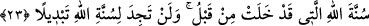

yarasının üzerine mübarek tükrüklerini sürdü. Yara kapandı. Efendimiz (s.a.)
ganimetlerin ve esirlerin getirilip toplanmasını emretti. Hepsi bir yere toplandı. Daha
sonra da Cirane’ye[132] getirildi. Nitekim şu âyet-i kerîmeyle kastedilen de bu kadındır.
“İpini koparan kadın gibi olmayın” (Nahl, 16/92). Bu ganimetler Tâif seferinden
dönülünceye kadar bu şekilde burada bekletildi. Daha sonra Tâif’ten dönüldüğünde
Rasûlullah (s.a.) bunları paylaştırdı. Esir sayısı 6.000, deve sayısı 24.000, koyunların
sayısı 40.000’den fazlaydı. 4.000 gümüş okka bulunuyordu.
Rasûlullah (s.a.) orada on üç gece kaldıktan sonra Cîrâne’de umre için ihrama girdi.
“– Buradan 70 Peygamber umreye gitmiştir” buyurdu.
Rasûl-i Ekrem (s.a.) hicretten sonra dört defa umre yapmıştır. Birincisi Hudeybiye
umresidir. İkincisi ise, bir sonraki yıl gerçekleştirilen kaza umresi anlamına gelen
“umretü’l-kaza”dır. Üçüncüsü Cîrâne umresi, dördüncüsü de Vedâ haccı esnasında
yaptığı umredir. Huneyn savaşı ve bu esnâda meydana gelen olayların geri kalanı Tevbe
sûresindeki “Allah (c.c.) size yardım etti” (Tevbe, 9/25) âyetinde anlatılmıştır.
22. Eğer kâfirler sizinle savaşsalardı, arkalarına dönüp kaçarlardı. Sonra bir dost
ve yardımcı da bulamazlardı.
Buradaki kâfirlerden maksad Mekke ehlidir. “Şâyet sizinle sulh yapmayıp savaşmış
olsalardı” demektir. Burada kâfirler ifâdesiyle kasdedilen zümrenin, Hayber
yahûdîlerinin yardımına koşmaya niyetlenen Esed ve Gatafân kabileleri olduğunu
söyleyenler de olmuştur. Hemen bozguna uğrarlar ve savaş bile olmazdı. Çünkü
arkalarını dönmek, bozguna uğramak anlamında kinâyeli bir deyimdir. Nitekim Ben
savaş günü sırtını göreceğin kimse değilim; savaştan asla kaçmam denir.
Bir şeyin arkası, önünün tersi anlamına gelir. Sırt ve geri gibi. Sonra da kendilerini
koruyacak hiçbir dost ve hiçbir yardımcı bulamazlardı.
23. Allah’ın, ötedenberi süregelen kanunu budur. Allah’ın kanununda asla bir
değişiklik bulamazsın.
Allah peygamberlerini galip getirmeyi geçmişte ve hâl-i hazırda prensip addetmiştir.
Ki bu da şu âyet-i kerîmeyle bildirilmiştir. “Ben ve peygamberlerim kesinlikle galip
geleceğiz.” (Mücâdele, 58/21).
Allah’ın bu sünnetinde, galibiyetin peygamberlerden başkasına verilmesi gibi bir